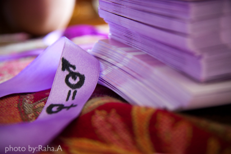
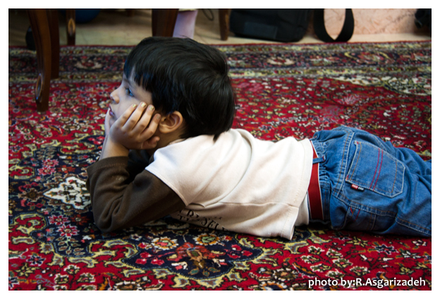
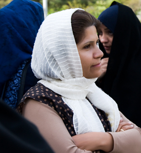

تغییر برای برابری
تغییر برای برابریما با همه ی کم شمارگان بودن به نسبت جمعیت ایران، تلاش کردیم تا در شهرهای مختلف، در محلات مختلف و از میان زنان و مردان متنوع جامعه مان در مورد قوانین تبعیض آمیز، برحق بودن مطالبات حقوقی کمپین یک میلیون امضا و گاه در مورد قوانینی خاص چون چندهمسری، حق طلاق و نظایر آن سوال کنیم...
پذيرش > واژه كليدها > صفحه بندی > ستون وسط
ستون وسط
مقالهها
-
 نظرسنجی از مردم در ارتباطی چهره به چهره
نظرسنجی از مردم در ارتباطی چهره به چهره
31 اوت 2010 -

تلنگر خشونت در خیابانها
31 اوت 2011پنجم شهريور ماه تعدادي از فعالين جنبش زنان در راستاي آگاهي بخشي و جلب توجه مردم به پديده خشونت عليه زنان در حركتي نمادين به خيابانهاي شهر تهران آمدند. اين زنان كه ردي از خشونت بر چهره داشتند كارتهايي آويخته به نوار بنفش با تعريف و روايتي از خشونت را ميان مردم توزيع كردند. حركت مذكور در ادامه انتشار بيانيه تحليلي تعداي از فعالين حقوق زنان عليه خشونت انجام شد. در متن اين بيانيه كه به امضا هفتصد نفر از فعالين و نهادهاي مدني رسيده است بستن روبان بنفش نمادي از اعتراض به پديده خشونت عليه زنان است.
-
مصاحبه تصویری فعال حقوق زنان، سمیه رشیدی/قسمت سوم
19 ژانويه 2010تغییر برای برابری - جای چه کسانی در زندان است ؟ آنان که حق تحصیل را از دانشجویان می گیرند یا آنان که بی حق می شوند ؟ چند سمیه اکنون در زندان است؟
-
 شغل تان را رها کنید وگرنه ما سرهایتان را از بدنتان جدا می کنیم
شغل تان را رها کنید وگرنه ما سرهایتان را از بدنتان جدا می کنیم
4 دسامبر 2010گزارشی از سوی سازمان دیده بان حقوق بشر نشان می دهد که زنان افغان مجددا در حال محروم شدن از حقوق شان هستند. زنان در مناطقی از افغانستان که تحت تصرف طالبان مانده، می گویند که دوباره در معرض تهدید و حمله قرار گرفته و وادار به ترک مشاغل و تحصیل می شوند چون ترس از این که حقوقشان قربانی بخشی از معامله با شورشیان برای پایان دادن به جنگ در افغانستان بشود، افزایش یافته است...
-
چرا لندن در آتش می سوزد؟
26 اوت 2011یک بلاگ نویس فمینیست در جستجوی تحلیل جنسیتی از شورشهاست، او از تحلیلهای تکراری مطبوعات از خشونتگران و انگیزه های آنان می نویسد و معتقد است که زنان بطور کلی در پوششهای خبری بجز یک مورد غایبند- ضعف در تربیت فرزندان. "... هر چند که زنان به طور کلی در طول تمام شورش غایب بوده اند، اما بعنوان مسولین اخلاقی شدیدن نمایانده می شوند. تمامی مسولیت والدین در اینجا به مادر واگذار شده و این درک وجود دارد که مادران تنها، موجب تخریب جامعه شده اند".
-
 هر ماه در لبنان یک زن در جریان خشونتهای خانگی کشته می شود
هر ماه در لبنان یک زن در جریان خشونتهای خانگی کشته می شود
1 مارس 2012در فاصله ماه می سال 2010 تا می 2011 ، به طور متوسط یک زن در هر ماه بر اثر خشونتهای خانگی در لبنان کشته شده است.این ها قتل هایی هستند که به ندرت در بین خطوط خبر در روزنامه ها به این صورت گزارش می شوند: الف.ب همسر س.ب را در شهری در لبنان به قتل رساند. این اسامی تنها در صورتی به دست می آیند که جستجوگر آن باشیم و به ندرت از ماجرای کامل قتل خبری منتشر می شود...
-
هفته ی سوم خرداد ماه با زنان در خبر- تشدید گرما همراه با ظهور مانکن های درنده و ماموران آرام و متین در سطح شهرها !
18 ژوئن 2011, بوسيلهى pariهفته ی سوم خرداد همراه با اندوه و ماتم درغم از دست دادن هاله سحابی آغاز شد و با اخبار تجاوز و کودک آزاری وخط و نشان کشیدن نیروی انتظامی برای بدحجاب ها پایان یافت.
-
ناهید توسلی: گنجاندن جنبش زنان در زیرمجموعه جنبش سبز «جفا» در حقِ ده سال کوشش زنان برای احقاق حقوق خود است
27 اوت 2010صریحاً اعلام میکنم که برای جامعه ایرانی مسلمان و سنتی، بدیهی است که بحث برابری جنسیتی، از همه بیشتر در قالب حرکت دروندینی میتواند به پیش برود - (و بهزعم من میتواند جواب هم بدهد)، - زیرا همانطور که گفتم چون قوانینی که منجر به نابرابری جنسیتی میشود ریشه در قوانین برگرفته از فقه شیعی دارد، لذا تغییر آن قوانین، یعنی بازخوانی و تفسیر و تاویل روزآمد قرآن و سنت، در قالب حرکتی دروندینی قابل انجام خواهد بود...
-

نیمای عزیزم : دارم برايت يك عروسك دلقك بزرگ ميبافم ...
29 مه 2011از وقتي كه به بند عمومي منتقل شدهام 3 بار به ملاقات كابيني آمدهاي و هر بار با ناراحتي برگشتهاي. مخصوصا وقتي زمان تمام ميشود و پرده پايين ميآيد دچار وحشت ميشوي و جيغ ميزني. خيال نكن غرور مردانهات را درك نميكنم...
-

حضانت در راهروهای اداره سرپرستی
21 ژوئن 2010مهرانه یکی از زنانی است که بعد از مرگ همسرش ، خانواده او این امکان را برایش فراهم آوردند که امور بچه ها و خانواده اش را شخصا عهده دار شود .به همین منظور سرپرستی فرزندان و مسایل مالی مربوط به زندگی آنها تحت نظارت اداره سرپرستی قرار گرفت و به این ترتیب مادری که با همکاری خانواده همسرش سرپرستی و حضانت فرزندانش را عهده دار شده بود به گونه ای دیگر از حقوق خود محروم شد...
0 | ... | 240 | 250 | 260 | 270 | 280 | 290 | 300 | 310 | 320 | ... | 450